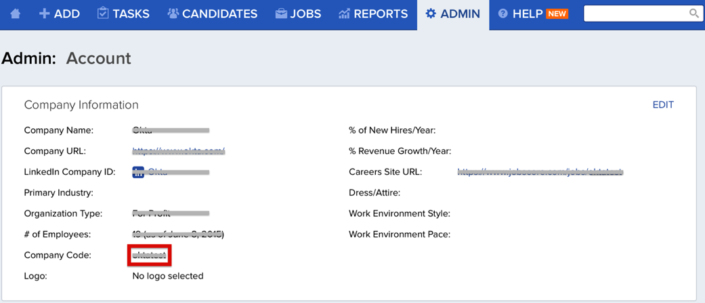
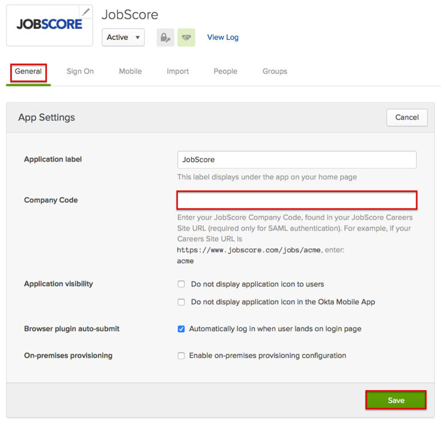

https://support.jobscore.com/hc/en-us/articles/204158279-How-can-my-company-integrate-using-SAML
Email support@jobscore.com and request that they enable SAML 2.0 for your account.
Provide the following information:
Your Company Name.
Identity Provider = OKTA
IDP Metadata: Copy and paste the following information:
Login into Jobscore as an administrator.
Navigate to Admin > Account.
Locate and save your Company Code.

In Okta, select the General tab for the JobScore app, then enter the Company Code you just save from JobScore.

Click Save.
JobScore Support team will process your request. After receiving a confirmation email, you can start assigning people to the application.
Done!
Notes:
IdP-initiated flows, SP-initiated flows, and Just In Time (JIT) Provisioning are all supported.